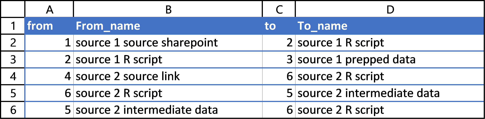

Inheriting a messy project
I was working on a data project that was at once meticulously organized and impossibly messy. There were no problems with the code, the repository structure, or the documentation. The problem was knowledge transfer. The author of the project had left my organization before I began, and no one had really looked over his code to ask him questions before he left.
The project combined many independent files from sources that required users to manually pull data, and the files would often have irregular formatting or other government-produced spreadsheet idiosyncrasies that made it impossible to fully automate the data acquisition process. Still, the project housed scripts that automated everything else the data sources needed to be combined, making the final product itself as reproducible as possible.
I was tasked with better documenting the dozens of files, scripts, and utilities so that staff could more easily maintain this repository going forward. I had very little background in the subject matter of the data project and had no idea where to begin. I started scribbling down the names of scripts on a piece of paper and drawing lines between them. It wasn’t long before I looked like a conspiracy theorist at the central of a devious plot of Census data and HUD variable refactoring. I knew there had to be a better way.
Enter: graphs
I decided to try using a network diagram rendered from a graph. In most data projects, “graph” means “mapping data to aesthetics to visually represent data features” like a barplot or scatterplot. No, I am not using ggplot today. Rather, I am going to use the discrete math definition of a graph, in the sense of representing the relationship between unique entities (read more).
In a graph, you define “nodes” (entities of interest to you) and “edges” (their relationships). It looks like Figure 1:
This figure represents a graph. It shows that there exist two nodes A and B, and that there exists a single edge relating the two. This image says: “A and B are related.”
This graph is not helpful to me, because my network of datasets and scripts does have directed relationships. I can’t just say “script 3 and dataset 3 are related.” I need to say “script 3 creates dataset 3.” This is fine, though, because edges can have directions if you specify. Something like Figure 2 would represent my issue.
This figure seems closer to what I want to accomplish in documenting my complicated project. The directed edge could mean a number of things. Here, I meant for it to say “script 3 creates dataset 3,” though this is not always what an edge means. In a large messy repository of many scripts and intermediate utilities, scripts might have many inputs to represent. For example, in part of my project, there was a script which pulled in source data and modified it according to a dictionary .json object which had been produced by another project and which (importantly!) would never be modified. This script combined the source data and the dictionary to produce clean data. I call most input objects “utils” if they are not regular tabulated data. This case is represented in Figure 3.
Now, it is more apparent that a directed edge is probably best translated to “informs” or “is used in.” The above image says “there exists a script which is informed by source and dict_util and which informs a dataset called clean_data.” This is the kind of image which I want to represent my repository so I can track how everything relates.
To be pedantic, these images are not the graphs. Graphs are abstract math models for conceiving relationships. These images are rendered representations of graphs. It would be easy for someone to read Figure 1 and say A is “above” or otherwise related in a hierarchy to B. That could have been my intention, but in this instance it was an arbitrary choice of my program when it decided to render the graph object "A--B".
This divorce between abstract relationships and visual representations is an important one. You can create graphs and investigate relational properties between nodes without ever rendering the graph visually. Rendering graphs visually is, of course, important for communicating relationships and meaning to others. I could feed the graph from Figure 3 into a program and, instead of rendering it, perform actions like “show me all antecedents to script” or “show me how many nodes separate source and clean_data from each other.” For more reading about graph data science, I highly recommend this blog post in which Tomaz Bratanic uses graphs to represent and analyze streamers on the Twitch platform.
In the end, though, I’m not a graph data scientist. I’m a busy intern who needs to document a repository. So, I will now cease using any distinction between a graph and its visual representation, and I will get back to the project at hand: making a graph diagram.
The DiagrammeR package
We need to create an informative visual representation of a network which can probably be modeled well using a directed graph. Like can be said for most things, there is an R package that can help us with this niche problem. The DiagrammeR package handles a number of analytic tasks related to graphs, including constructing graphs from dataframes of nodes and edges, querying graphs for relationships between nodes, and visually representing graphs in diagrams like the figures above. My main focus being the visual representation of my graph, I used the grViz() function to feed a Graphviz handler my graph data in DOT notation. I didn’t understand what that sentence meant two months ago, and I barely understand what it means now, but it goes something like this:
grViz("
digraph {
node [shape = circle,
fontname = Helvetica,
fontsize = 12]
dict_util->script
source->script
script->clean_data
}
")In this snippet above, I make three declarations in the form of source->script to define edges, which implicitly defines the existence of the nodes source and script. I then define general node attributes like shape and font. These are combined in either a graph {} or digraph {} call, depending on whether the graph is undirected or directed (in this case, it is directed, so I use digraph {}). Finally, all of this is then gathered as a large string and passed to grViz().
I want to do a little bit more with this. I want to group nodes by color so I can quickly tell which nodes are scripts and which nodes are datasets. Also, I want source datasets to have folder-shaped nodes. This will be helpful later, because some data comes from our organization’s SharePoint and some comes directly from links, and I’d like to distinguish between them. The code below which produces Figure 5 shows how I would manually create such a figure. As I add more details to the aesthetic rendering of the nodes, I start referring to nodes numerically as tab1, tab2, etc. This naming is arbitrary but will help later when I want to handle more nodes. It helps a bit with readability, too, because the node names are all similar in length now.
grViz("
digraph {
node [fontname = Helvetica, style = filled]
tab1 [label = 'source', shape = folder, fillcolor = green]
tab2 [label = 'util', shape = rectangle, fillcolor = purple]
tab3 [label = 'script', shape = rectangle, fillcolor = grey]
tab4 [label = 'output', shape = rectangle, fillcolor = green]
tab1 -> tab3
tab2 -> tab3
tab3 -> tab4
}
")The code here is a little awkward and seems like it could have been simplified. It could! But that simplification would only matter if I were manually creating the string argument for the grViz() function. I intend rather to use tabular node and edge data to create a simple string for each node and each edge, then combine these string values into the larger string which grViz() requires. This is definitely the point where I start building up technological debt and the maintenance of my code becomes more difficult than is probably necessary. But! It works.
The workflow
A wiser version of myself would have investigated the DiagrammeR documentation fully so that I would know how to turn tabular data on nodes and edges into a graph object, then render that graph object by turning some of the node attributes into aesthetic mappings such as color, size, position, and shape. I did no such thing. Instead, after getting a little confused on how to construct and handle diagram objects, I settled for using the Graphviz method which I just demonstrated. The grViz() function takes as its argument a giant string, which declares nodes, edges, and aesthetics. I wanted to be able to store the node and edge data in a separate file, then use this data to construct the string for grViz(), which felt like cheating a bit and led to some bogus-looking code. I decided on the following workflow:
- document the objects in the repository
- document the relationship between these objects
- pull this data into R
- add aesthetic mappings onto the data
- turn that data into a DOT notation string
- pass this string to
grViz()and export the resulting figure
A simple example
In this example, I do steps 1-4 as short code statements. For my larger project, I ended up using a larger Microsoft Excel document with a worksheet for “nodes” and another for “edges.” Below, I create small dataframe objects for nodes and edges, then I add two aesthetic mappings as new columns onto the nodes dataframe.
library(DiagrammeR)
library(tidyverse)
# input node data
nodesdf <- data.frame(
id = 1:4,
name = c('source', 'util', 'script', 'output'),
category = c('data', 'util', 'script', 'data')
)
# input edge data
edgesdf <- data.frame(
from = c(1, 2, 3),
to = c(3, 3, 4)
)
# edit node data to map category to color and name to shape
nodesdf <- nodesdf %>%
mutate(
color = case_when(
category == 'data' ~ 'green', # data nodes will be green
category == 'script' ~ 'grey', # script nodes are grey
TRUE ~ 'purple' # anything else will be purple
),
shape = case_when(
name == 'source' ~ 'folder', # source files will be folder-shaped
TRUE ~ 'rectangle' # anything else is a rectangle
)
)
print(nodesdf) id name category color shape
1 1 source data green folder
2 2 util util purple rectangle
3 3 script script grey rectangle
4 4 output data green rectangleprint(edgesdf) from to
1 1 3
2 2 3
3 3 4Next, I will add a new column onto nodesdf to create the necessary string that defines each node’s name, color, and shape. It’s a very ugly use case of a paste() function. Because the eventual argument fed to grViz() is a string, this string which contains strings must use many escape characters to make sure it constructs correctly. I will also add a new column to the edgesdf in a similar fashion.
nodesdf <- nodesdf %>%
mutate(
node_label = paste0(
'tab'
,id,
' [label = \'',
name, # label str
'\', shape = ',
shape,
', fillcolor = ',
color,
']'
)
)
print(nodesdf) id name category color shape
1 1 source data green folder
2 2 util util purple rectangle
3 3 script script grey rectangle
4 4 output data green rectangle
node_label
1 tab1 [label = 'source', shape = folder, fillcolor = green]
2 tab2 [label = 'util', shape = rectangle, fillcolor = purple]
3 tab3 [label = 'script', shape = rectangle, fillcolor = grey]
4 tab4 [label = 'output', shape = rectangle, fillcolor = green]edgesdf <- edgesdf %>%
mutate(
edge_label = paste0(
'tab',
from,
' -> tab',
to
)
)
print(edgesdf) from to edge_label
1 1 3 tab1 -> tab3
2 2 3 tab2 -> tab3
3 3 4 tab3 -> tab4Now having constructed the strings which define the nodes and edges, I finalize the portions of the grViz() arguments which come from node and edge. To do this, I use summarize() to collapse many rows into one, using a paste() function as the summary function. It is important to note that the grViz() function expects a new line or some other delimiter between declarations of nodes and edges. For simplicity’s sake, I use a newline character. Important to note: using the print() and the writeLines() functions will result in different handling of newline characters.
# define nodes string
nodestr <- nodesdf %>%
summarize(paste(node_label, collapse = '\n')) %>%
as.character() # we want a string, not a 1x1 dataframe holding a string
# define edges string
edgestr <- edgesdf %>%
summarize(paste(edge_label, collapse = '\n')) %>%
as.character()
# debugging example
writeLines(edgestr)tab1 -> tab3
tab2 -> tab3
tab3 -> tab4Finally, we can combine the two string portions we’ve built into the final string argument for grViz(). I write this to an intermediate object graphstr which I can then pass to the rendering function.
# include some parameters then pass string literals
graphstr = paste(
"digraph {
node [fontname = Helvetica, style = filled]",
nodestr,
edgestr,
'}',
sep = '\n'
)
grViz(graphstr)We did it! We found a pretty wonky workflow to turn tabular node and edge data into a graph, including turning node attributes into visual aesthetics for the rendered graph. I am certain there is a simpler way to do this, but I found this problem easier to solve when I knew what I wanted the grViz() call to look like and reverse-engineered that string from my data.
Documenting: a real-world example
For my project, I documented anything that seemed like an important “moving part.” This included any source data links, each script, any important packages, any intermediate datasets (that a project user would have saved to their machine as part of the steps of running each script in order), and any other important utilities. This also included two important “temporary” objects that existed only temporarily within a large script. These temporary datasets were methodologically complex to create and were very sensitive to changes in inputs, so they seemed to merit defining as separate objects that “informed” the script that contained them. I’m not sure how consistent that categorization is, but it was useful at the time.
I stored my project in an Excel worksheet. The particularities of my project required me to document the “stage” and “substage” of each portion of the project, and also to note the location and path of each item. I added the location to the path1 column and the actual path or link to the item in the path2 column. This naming scheme is bad, but it worked fine for my project. I mostly had the paths and links so I could use the spreadsheet for future reference. Collecting this data on my project took some time to make sure I had written down every item. The only important thing to remember is to give each row an id for reference.
I then documented the binary “from-to” relationships of each node in a new sheet. This sheet had four columns, but the only two that matter are the from and to columns, because the other two are filled with a quick =XLOOKUP() call so that I as a user could better track what I was doing.

This spreadsheet served well to document the nodes and edges of my project. You may prefer using .csv files so their changes can be tracked more closely with git, but I found the ease of Excel preferable.
Rendering my real-life example
Having source data to pull from, I can now create a diagram of my project. I pull the data from my Excel document using readxl::readxlsx. Then I mutate the nodes dataframe to add aesthetic mappings. This mutate also includes a paste() call to construct the string for each individual node that defines the title, color, and shape of each node. Unique in this case is my use of two attributes for the node name, separated by a newline character. I use each row’s substage and name values to create an entity’s node name. I then construct the graph string argument by collapsing the node and edge dataframes using summarize() then combining them with the other portions of the string value which grViz() expects. I then render the image. This chunk has some commented-out examples of how you could render a high-quality version of this image and save it to .pdf and .png using a combination of DiagrammeRsvg and rsvg.
library(readxl)
library(tidyverse)
library(DiagrammeR)
library(DiagrammeRsvg) # exporting to svg improves output resolution
library(rsvg) # helps handle svg
# file
xl <- "data/diagram_data.xlsx"
# import graph relationship data
nodesdf <- read_xlsx(xl, sheet = 'Nodes')
edgesdf <- read_xlsx(xl, sheet = 'Edges')
# add additional node attributes to initial node df
nodesdf <- nodesdf %>%
mutate(
# adding shapes as a case of the file 'type'
shape = case_when(
type == 'script' ~ 'rectangle',
type %in% c('prepped', 'final') ~ 'cylinder',
type %in% c('util', 'intermediate', 'temp') ~ 'oval',
type %in% c('source', 'link') ~ 'folder'
),
# adding colors based on type and origin
color = case_when(
type == 'script' ~ 'white',
type == 'temp' ~ 'yellow',
type == 'prepped' ~ 'grey',
type == 'final' ~ 'greenyellow',
type == 'link' ~ 'beige',
path1 == 'sharepoint' ~ 'cyan',
type == 'intermediate' ~ 'salmon',
TRUE ~ 'plum' # this applies to intermediate utilities, mainly
),
# define the labels
node_label = paste0(
'tab',
id,
' [label = \'',
substage,
'\n',
name,
'\', shape = ',
shape,
', fillcolor = ',
color,
']'
),
)
# create edge label string for each row
edgesdf <- edgesdf %>%
mutate(
edge_label = paste0(
'tab',
from,
' -> tab',
to
)
)
# define nodes string
# need \n characters for grViz()
nodestr <- nodesdf %>%
summarize(paste(node_label, collapse = '\n')) %>%
as.character()
# define edges string (similar setup)
edgestr <- edgesdf %>%
summarize(paste(edge_label, collapse = '\n')) %>%
as.character()
# include some parameters then pass string literals
graphstr = paste(
"digraph flowchart {
node [fontname = Helvetica, style = filled]",
nodestr,
edgestr,
'}',
sep = '\n'
)
# for debugging
# writeLines(graphstr)
# render in R session
grViz(graphstr)The DiagrammeR package doesn’t support “legends” for rendered graph images. This is no problem; because my shapes and colors are coming from just a few columns, I can make a second dataframe drawing only from those important columns, then select only unique rows using distinct(). I can then use nearly the same workflow as above to produce a legend that visually shows what each shape and color combination represent.
# create legend df for unique color/shape combos
legend <- nodesdf %>%
distinct(color, shape, type, path1) %>%
mutate(
id = row_number(),
legend_label = paste0(
'tab',
id,
' [label = \'',
'type: ',
type,
'\n',
'path: ',
path1,
'\', shape = ',
shape,
', fillcolor = ',
color,
']'
)
)
# collapse into grviz-compatable string
legendstr <- legend %>%
summarize(paste(legend_label, collapse = '\n')) %>%
as.character()
# create grviz string
legendgraphstr = paste(
"digraph {
node [fontname = Helvetica, style = filled]",
legendstr,
';}',
sep = '\n'
)
# for debugging
# writeLines(legendgraphstr)
# render in RStudio viewer
grViz(legendgraphstr)Note that, in the above renderings, there are tooltips for each node titled “node1” “node2” etc.
Exporting Diagrams
The DiagrammeR package sometimes struggles to export high-quality images outside of the rendering that occurs in your RStudio session. Using the DiagrammeRsvg and rsvg packages, you can save high quality diagram renderings to many formats. First, render the diagram with grViz(), then use export_svg() to turn that image to an svg object, then convert the svg string to raw data with charToRaw(), then save the object with an rsvg function. Below is an example of exporting both the diagram and a legend to both .pdf and .png formats.
# export to high quality pdf from svg
grViz(graphstr) %>%
export_svg() %>% charToRaw() %>% rsvg_pdf("output/diagram.pdf")
# export to high quality png from svg
grViz(graphstr) %>%
export_svg() %>% charToRaw() %>% rsvg_png("output/diagram.png")
# export to high quality pdf from svg
grViz(legendgraphstr) %>%
export_svg %>% charToRaw %>%
rsvg_pdf("output/diagram-legend.pdf")
# export to high quality png from svg
grViz(legendgraphstr) %>%
export_svg %>% charToRaw %>%
rsvg_png("output/diagram-legend.png")And here is the high-quality .png output of the main graph diagram:

Conclusion
Rendering a project in a directed graph like this was very helpful for me. I understood how scripts worked together. I had a better idea what “downstream” scripts needed a spot check when a data source updated. I knew which portions of the repository I could leave alone and which parts would be more “sensitive” to changes in variable names, years, and formats.
I don’t think the code I wrote is very pretty. I think it would be a cleaner and more flexible approach to use my input data to create a graph object with DiagrammeR, then use functions apart from Graphviz to render the graphs. My weird string-creating functions serve as an exercize in technological debt; they aren’t immediately intuitive to other users, and maintaining them would have small marginal returns compared to just using the normal node aesthetic functions DiagrammeR provides. Nevertheless, I technically succeeded in my goal of flexibly rendering this one project’s repository. That was, after all, my goal.
So far, I have not been able to find other projects where R users create images in DiagrammeR without manually typing everything in a Graphviz statement. My goal is to avoid that and rather make the diagram part somewhat automatic so people like me can focus on the documentation of our projects.
I am no expert in graphs, I just think they’re neat. I don’t understand them very well, but discrete math topics like topology and graph theory fascinate me and make me curious about what tools I now lack which could make my work easier and more conceptually clear.
If, one day, I refine this workflow better, I will try to share the R project which defines the necessary functions to render a project.
Further reading
Documentation for DiagrammeR can be found here.
Specific information on Graphviz functionalities in DiagrammeR can be found here.
The blog I linked above which discusses using data science to analyze Twitch streamers is here.
A very neat blog about using DiagrammeR which discusses more complicated graphs (including “subgraphs”) can be found here.
The source code for this blog can be found at my GitHub.